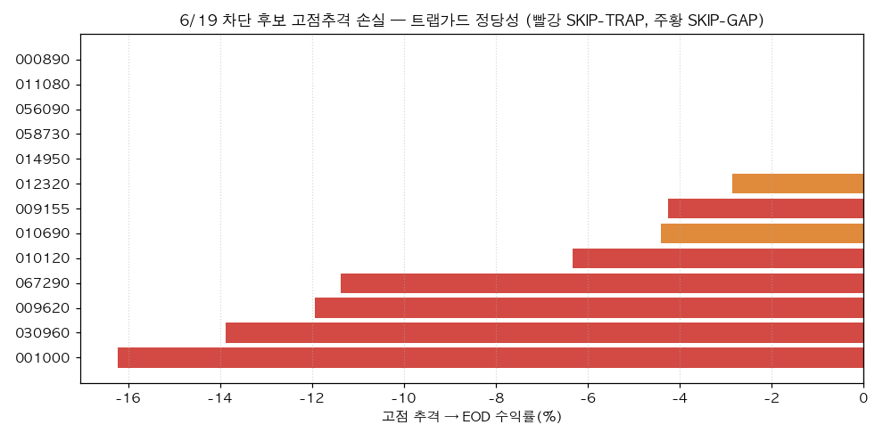
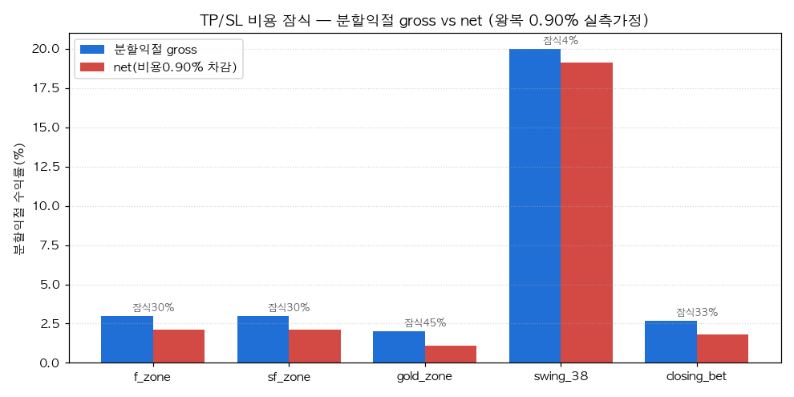

Project: BarroAiTrade · Date: 2026-06-21 · Status: Final (진단 + 측정도구 (c) 구현. 실거래 파라미터는 (d) HITL 미적용) 대상: 방금 머지된
trap_guard(진입) +regime_exit(청산) 고도화. ①매매시그널 ②TP/SL 구간 2가지 상세체크. 연관: [[2026-06-21-0619-trap-guard-simulation.report]] · [[2026-06-21-tp-sl-exit-logic.report]]
머지된 trap_guard·regime_exit는 default-OFF·미측정이었다. 두 측정 도구를 신설해 상세 점검한 결과: - 신호: 6/19 트랩 후보 13건을 게이트가 전부 차단(갭가드 7·트랩가드 6), 차단군을 장중 고점에 추격했다면 EOD까지 평균 −5.5% → 차단 정당(개미꼬시기 포착). 단 09:30 추격 기준 +7.4%(일부 상승 지속) = 차단 무료 아님(임계 측정 필수). - TP/SL: 임계가 전부 gross라 비용(왕복 0.55~0.90%)이 잠식 — gold_zone 분할익절 +2%는 비용이 45% 잠식, SL은 net −4.9%. 6/16 실현 +13,862원은 전적으로 이월 supertrend 덕(sf_zone 대우건설 고갭 −181K). regime_exit 활성 시 SIDEWAYS SL −4→−3.
(c) 즉시 구현 완료: 측정도구 2개(_signal_decision_audit.py·_tpsl_zone_diagnostic.py) + trap SHADOW 모드 + 본 리포트. (d) 실거래 파라미터 5종은 §5 권고 → AskUserQuestion 후 결정(default 불변).
| 항목 | 내용 |
|---|---|
| 신호 데이터 | 6/19(트랩 풍부 무버, 5분봉 실측+일봉 합성). 6/19는 live-OFF라 실현 0 → 게이트 "결정"만 재현 |
| TP/SL 데이터 | 6/16(실측 fill 존재) — _daily_strategy_audit.py --source auto 진실원천(total_realized +13,862 인용) |
| 측정 도구(신규, (c)) | _signal_decision_audit.py(게이트 replay+forward-return), _tpsl_zone_diagnostic.py(gross/net+regime) |
| 비용 가정 | 현행모델 왕복 0.55%(편도 0.175%) vs 6/17 실측 재분석 0.90%(편도 0.350%, fill_audit 186건) 병행 |
| 안전 | 측정도구·SHADOW·regime_exit 모두 default-OFF(env/PolicyConfig 미설정 시 라이브 byte-identical) |
_signal_decision_audit.py --date 2026-06-19 --movers 12 — 후보별 게이트 체인 재현 + forward-return.

| 종목 | 전략 | score | flu% | 윗꼬리 | pos930 | 판정 | 고점→EOD | 사유 |
|---|---|---|---|---|---|---|---|---|
| 010120 | gold_zone | 0.79 | 7.0 | 3.50 | 80% | SKIP-TRAP | −6.3% | upper_wick 3.50 |
| 009620 | f_zone | - | 11.5 | 9.08 | 26% | SKIP-TRAP | −11.9% | upper_wick 9.08 |
| 067290 | f_zone | - | 13.1 | 1.13 | 60% | SKIP-TRAP | −11.4% | upper_wick 1.13 |
| 030960 | f_zone | - | 10.0 | 1.48 | 7% | SKIP-TRAP | −13.9% | upper_wick 1.48 |
| 001000 | f_zone | - | 8.4 | 2.19 | 6% | SKIP-TRAP | −16.2% | upper_wick 2.19 |
| 009155 | f_zone | - | 11.4 | 0.71 | 84% | SKIP-TRAP | −4.3% | over_ext 0.327 > 2.5×ATR |
| 010690·012320·… | f_zone | - | 16~30 | - | - | SKIP-GAP | 0~−4% | flu ≥ 15% |
발견: 1. 차단 정당성 입증: 차단군 13건을 장중 고점에 추격하면 EOD까지 평균 −5.5%(001000 −16.2%·030960 −13.9%·009620 −11.9%). 윗꼬리·과확장 경고가 실제 페이드로 이어짐. 2. 실제 후보 010120(gold_zone, score 0.79 — 6/19 sim 선정)도 윗꼬리 3.5x로 트랩가드 차단 → −6.3%. 전략 시그널 위에서 작동. 3. 단 09:30 추격 기준 차단군 +7.4%(일부 상승 지속 + 상한가 5건 0%). 즉 너무 이르게 차단하면 정상 모멘텀 손실 → 임계는 측정으로 손익분기 탐색(휩쏘 양날). 4. 관측성 공백 해소: "왜 탈락했는지(어느 게이트)"를 집계하는 도구가 없었음 → 신규 audit로 차단율(갭가드 7·트랩 6)·forward-return 정량화.
_tpsl_zone_diagnostic.py --date 2026-06-16 — 전략별 gross vs net + 국면 효과 + 실현 맥락.

| 전략 | grossTP | netTP(0.90%) | grossSL | netSL(0.90%) | 분할TP | 잠식%(0.90) |
|---|---|---|---|---|---|---|
| f_zone | 5.0 | 4.10 | −4.0 | −4.90 | 3.0 | 30% |
| sf_zone | 7.0 | 6.10 | −4.0 | −4.90 | 3.0 | 30% |
| gold_zone | 4.0 | 3.10 | −4.0 | −4.90 | 2.0 | 45% |
| swing_38 | 50.0 | 49.10 | −15.0 | −15.90 | 20.0 | 4.5% |
| closing_bet | 4.5 | 3.60 | −5.0 | −5.90 | 2.7 | 33% |
regime_exit 효과(예시배수 — 현재 default-OFF):
| 전략 | baseSL | SIDEWAYS_SL | baseTP | BULL_TP | BEARISH_SL |
|---|---|---|---|---|---|
| f_zone | −4.0 | −3.00 | 5.0 | 6.50 | −5.00 |
| gold_zone | −4.0 | −3.00 | 4.0 | 5.20 | −5.00 |
| swing_38 | −15.0 | −11.25 | 50.0 | 65.00 | −18.75 |
발견:
1. 임계가 전부 gross → 타이트한 분할익절일수록 비용 잠식 큼. gold_zone +2% 분할익절은 0.90% 비용이 45% 잠식(net +1.10%), f/sf +3%는 30%, closing +2.7%는 33%. SL도 net으로 ~0.9%p 더 깊다.
2. 비용 모델 2배 과소 → 정정 적용(✅): fill_audit 298행 재도출으로 확정 — 수수료 1,768,040 / 왕복거래액(매수+매도) 505,588,092 = 편도 0.3497%. fee 공식이 (매수+매도)×COMMISSION_RATE라 rate=0.0035 여야 하나 코드는 0.00175(절반). 종전 6/11 계산이 '왕복 0.3494%'를 편도로 오라벨 후 반감한 오류. COMMISSION_RATE 0.00175→0.0035 정정(시뮬/선정이 net 정확 반영 → 한계셋업 과매매 감소). 영향 테스트 6건 정정값 갱신.
3. 6/16 실현 맥락(진실원천): f_zone +234,653 / sf_zone −180,986(대우건설 +20.6%갭 sf — sim −0.1만 → 실현 −18.1만 대괴리) / gold −12,673 / supertrend −27,132 / total +13,862(전적으로 이월 supertrend 덕). §C 손절슬립은 sf +0.13%p(작음 — 손실은 슬립 아닌 진입가 위치).
4. regime_exit는 100% 무동작(의도된 default-OFF). 6월 SIDEWAYS 변동성장엔 SL 타이트(−4→−3)가 후보지만, 노이즈 손절 다발(휩쏘) 위험 → 측정 후.
| 도구 | 역할 | 안전성 |
|---|---|---|
scripts/_signal_decision_audit.py |
특정일 후보 게이트 체인 재현(SKIP-GAP/TRAP) + forward-return 검증 | 읽기·계산만, config 무변경 |
scripts/_tpsl_zone_diagnostic.py |
전략별 gross vs net(2 비용가정) + regime_exit 효과 + 실현 맥락 인용 | 읽기·계산만 |
intraday_buy_daemon.py SHADOW 모드 |
env BARRO_TRAP_SHADOW=1 → 트랩 "차단했을 것"만 로깅(미차단) → enforce 전 차단율 측정 |
default-OFF(enforce), env 토글 |
regime_exit.apply_net_aware_tp + net_aware_tp_enabled |
TP/분할익절 비용 가산(net 익절) | config-gated default-OFF |
COMMISSION_RATE 0.00175→0.0035 |
실측 2배 과소 정정(298행) | (d) 승인 적용 |
| 테스트 +14건 | net 변환·regime·net-aware·게이트 판정·default-OFF parity | 전체 1496 통과 |
| # | 권고 | 분류 | 우선 | 처리 |
|---|---|---|---|---|
| 1 | 측정도구 2개 + SHADOW 모드 + 본 리포트 | (c) | P0 | ✅ 구현·테스트 완료 |
| 2 | 수수료 요율 협의(net 잠식 구조적 1순위 레버) | (a) 운영 | P0 | 사용자 액션(협의 후 BARRO_COMMISSION_RATE) |
| 3 | COMMISSION_RATE 0.00175→0.0035 정정(실측 2배) |
(d)→승인 | P1 | ✅ 정정 적용(298행 확정, 영향 테스트 6건 갱신). ops pull 시 시뮬/선정 net 정확화 |
| 4 | trap_guard SHADOW 배포 측정(wick 1.0·gap 15·k 2.5) | (d)→승인 | P1 | ✅ 코드 완비 → ops SHADOW 런북(아래). 측정 후 enforce |
| 5 | regime_exit 활성화 + SIDEWAYS SL×0.75 | (d)→승인 | P1 | ✅ config-gated 완비 → ops policy.json 런북(아래). 코드 default 는 OFF 유지 |
| 6 | net-aware TP/SL(gold 분할 +2%→비용가산) | (d)→승인 | P2 | ✅ 구현(config-gated default-OFF, net_aware_tp_enabled) |
| 7 | SL 격차(−2 백테 vs −4 라이브) 통일 | (d) | P2 | 측정 후(슬립 +0.13%p·STOP_LOSS<20%라 재검토 트리거 미달) |
| 8 | 갭가드 _ZONE_MAX_FLU(15%) |
(b) 이미구현 | — | 배포됨(env 토글) |
코드 default 는 모두 OFF(라이브 byte-identical). 아래는 운영 머신 설정(이 개발머신 미적용).
① 비용율 정정: git pull origin main 만으로 적용(코드 default 0.0035). 우대요율 협의 시 BARRO_COMMISSION_RATE 로 하향.
② trap_guard SHADOW 측정(1~2주, 미차단): .env.local 에
BARRO_TRAP_UPPER_WICK_MAX=1.0
BARRO_TRAP_OVER_EXT_K_ATR=2.5
BARRO_TRAP_GAP_ATR_MULT=3.0
BARRO_TRAP_GAP_ABS_MAX_PCT=15.0
BARRO_TRAP_SHADOW=1 # 차단했을 것만 로깅(미차단). 측정 후 0 으로 enforce
로그의 [SHADOW-TRAP] 빈도·forward 결과로 차단율·오차단 측정 → 그 후 BARRO_TRAP_SHADOW=0.
③ regime_exit 활성화: data/policy.json 에(또는 /tune)
{ "regime_exit_enabled": true, "regime_sideways_sl_mult": 0.75, "regime_bull_tp_mult": 1.3 }
(daemon 이 refined_signals.json 당일 regime 산출 → evaluate_holdings 가 SIDEWAYS 시 SL −4→−3.) 휩쏘 위험 → verify_eod_data·_daily_strategy_audit 로 손절율 모니터.
④ net-aware TP: data/policy.json 에 { "net_aware_tp_enabled": true } (TP/분할익절 +0.9% gross-up → net 익절).
feat/thetrading-uplift-increment1, 미커밋(커밋/푸시는 승인 후).